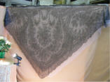
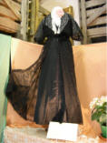
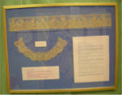

|
BIENVENUE A LA FERME
JOURNEES PORTES OUVERTES |
|
|
|
|||
dernière mise à jour de cette page : 21.10.2009
La Ferme de La Godinière
27410
Le Noyer en Ouche
Samedi
14 Avril 2007 de 13h30 à 19h
Dimanche 15 Avril 2007 de 13h30 à 19h
|
BIENVENUE A LA FERME
JOURNEES PORTES OUVERTES |
2007 : Nouvelle formule : "Le
Printemps Bienvenue à la Ferme"
Chambre d'Agriculture de l'Eure Tel :
02.32.78.80.50
Cette année, à la Ferme de la Godinière :
|
"SUIVEZ LE FIL" |
La fête est finie. Tout s'est déroulé pour le mieux. Tout d'abord MERCI aux participants qui ont donné un peu de leur temps pour faire une animation qui a retenu l'attention d'un Public de Visiteurs habituels ou occasionnels, qui ont parfois fait de la route pour venir nous rendre une visite.
Merci également à la presse et France Bleu Haute Normandie qui ont annoncé l'évènement Portes Ouvertes de Bienvenue à la Ferme et qui ont relayé l'animation prévue à La Godinière.
Le thème imposé par la Chambre
d'Agriculture était la randonnée. Celle-ci pouvait se décliner en un
parcours dans le verger.
Nous avons établi trois parcours balisés avec un fil accroché aux branches des
pommiers. Chacun pouvait à tout moment passer de l'un à l'autre en se repérant
sur les plans disposés aux intersections de ceux-ci.
1 - Vert 750 m
2 - Bleu 1800 m
3 - Rouge 2500 m
A la fin du parcours, les visiteurs ont pu découvrir notre cave métamorphosée,
transformée pour la circonstance à la fois en galerie d'exposition et de
démonstration de..... DENTELLE.... !!!! Mais, quel est donc le lien avec
le terroir dans une Ferme Cidricole ?
Nous avons l'habitude de proposer une animation (comme il est préconisé par la
Chambre, mais on y avait déjà pensé bien avant), et, après l'Astronomie - entre
autres - nous avons eu cette idée sur la dentelle, ayant dans nos relations des
Dames qui excellent dans cet Art... Il ne suffisait plus qu'à concrétiser, et le
succès fut au rendez-vous!
Tout d'abord il y avait
Mariette qui nous a fait découvrir la
Dentelle de Bruges (venue spécialement de
Belgique)
Elle pratique la dentelle au fuseaux
et a présenté quelques uns de ses travaux dont le Beffroi de Bruges.
Au hasard de discussions, Nicole de Liège (également venue de Belgique) nous montrait la technique du Crochet, bien que moins spectaculaire, n'en est pas moins jolie, c'est différent.
Il nous fallait bien trouver quelqu'un de chez
nous... car le dentelle en Normandie, on connaît aussi. Nous avons découvert
près d'ici
Jocelyne Courtin qui pratique la Dentelle du Puy en Velay
Ce n'est pas Normand, mais
c'était l'occasion de la découvrir. Si vous avez envie de voir de plus
près, il faut savoir que
|
Jocelyne Courtin donne des cours de dentelle à l'association "temps libre" de Nassandres : Il faut contacter La Présidente Mme David au 02.32.45.05.49 ou venir sur place le jeudi à la salle des associations (derrière Vival). |
|
Jocelyne n'était présente que la samedi. Entre temps, et comme les infos vont très vite maintenant, Dotty est venue d'Anvers, elle fait de la Dentelle Russe aux fuseaux. Nous ne l'avions pas prévue, c'est elle qui nous a fait la surprise ! et tout le monde en a profité. Du plaisir plein les yeux!!! car leurs travaux ne sont pas à vendre. |
|
Les visiteurs pouvaient néanmoins repartir avec un petit souvenir en achetant des napperons réalisés au crochet par Annick
C'est tout pour ce qui est des démonstrations (ce
qui n'est déjà pas si mal en soi ), mais
il y avait une exposition (à la taille proportionnelle à celle de nos locaux),
dont la grandeur à séduit nos visiteurs. En effet, nous avons pu, par le
concours de Madame Le Guell, exposer deux présentations sur
les manufactures de dentelle à la main :
- de Harcourt fondée par Françoise de Brancas et de Bernay fondée par Anne de Ticheville
Bien des gens de la région n'en connaissaient
l'existence,
On dit toujours que le meilleur est pour la fin... à vrai dire c'était ce que l'on voyait en premier en arrivant dans la cave.
|
 |
 |
 |
En effet, Madame Le Guell nous a aimablement confié
deux pièces remarquables de sa collection : une robe en dentelle de Bayeux et un
châle époque Napoléon III .
Nous avions également quelques panneaux expliquant le travail de la dentelle
avec entre autres
un col en dentelle d'Alençon à l'aiguille.
A suivre
nnnnnnnnnnnn
nnnnnnnnnnn
(psitt... nous n'avons pas pu avoir la fabrique du métier
à tisser de Beaumont le Roger
car une expo à l'Office de Tourisme de Beaumont présentée par M. Claude
Malhère
était prévue du 1er mai au 1er septembre 2007....)
Voir Beaumont le Roger
Nous rappelons que nous accueillons aimablement tous groupes de randonneurs, quelque soit le type, pour une pose ou un pique-nique, SUR RESERVATION - PREVENIR QUELQUES JOURS A L'AVANCE - abri en cas de mauvais temps, et gratuitement bien sûr... et passer une nuit sur place peut être envisageable si vous êtes campeurs,
Retour Accueil : cliquez
ou page précédente
Ecrivez nous pour donner votre impression et votre suggestion, merci.